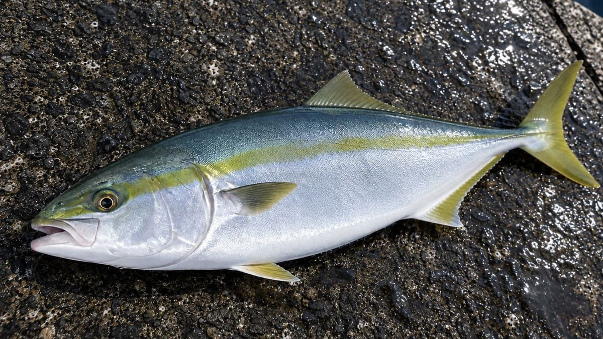
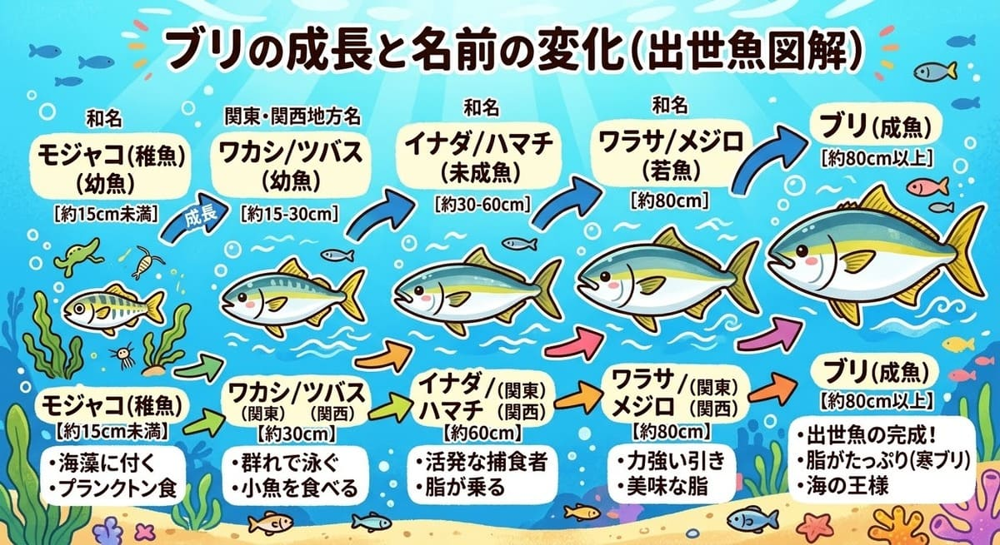

【陸っぱり青物】強烈な引きを味わう！堤防・サーフからの「イナダ」釣り完全攻略ガイド

堤防や砂浜から手軽に狙える身近な青物として、釣り人に絶大な人気を誇るのが「イナダ」です。小魚を追い回す獰猛さと、掛けた瞬間の強烈な走り、そして食べて美味しいその魅力について、生態から3つの代表的な釣り方まで徹底的に解説します。1. イナダってどんな魚？（特徴と出世の歴史）

- イナダはスズキ目アジ科に分類される青物で、日本の沿岸域に広く生息しています。
- 見た目はヒラマサに似た細長い紡錘形で、やや角張った体つきをしています。背中は青緑、お腹は白銀色に輝き、目から尾ビレにかけて不鮮明な黄色いストライプ模様が入っているのが特徴です。
- 標準和名では「ブリ」と呼ばれますが、成長過程で名前が変わる出世魚の代表格です。
- 関東地方での呼び名は、おおむね35cm以下が「ワカシ」、35〜60cmを「イナダ」、60〜80cmで「ワラサ」、80cmを超えると「ブリ」へと変化します。一方、関西地方では「ツバス」「ハマチ」「メジロ」「ブリ」と、地域によって異なる名前で親しまれています。
2. 狙うべきシーズンとポイントの探し方
- イナダは非常に高い遊泳力を持ち、大きな群れを作って沿岸の表層から中層付近を回遊します。
- 釣り場として有望なのは、潮通しの良い防波堤の先端や、サーフ（砂浜）、外海に面した磯場などです。
- 釣期としては、まず8月頃に小型のワカシが回遊し始め、秋（9〜10月頃）にかけてイナダサイズに成長すると本格的なベストシーズンを迎えます。
- 釣果を上げる最大の秘訣は、「イナダが食べているエサ（ベイト）の居場所を見つけること」です。海面に鳥が集まっている（鳥山）場所や、小魚が逃げ惑って水面が波立つ「ナブラ」が出ている状況は、イナダがすぐ近くにいる強力なサインとなります。
- また、海が荒れて波が高い日には、群れが港の内側に避難してくることもあるため、思わぬ場所が好ポイントになることもあります。
3. 陸からイナダを狙う3つのアプローチ（詳細版）
イナダは非常に好奇心が強く貪欲な回遊魚であるため、釣り場の状況やベイト（エサとなる小魚）の種類に合わせて、大きく3つのスタイルで狙うことができます。それぞれの釣法における仕掛けの基本と、釣果を伸ばすための実践テクニックを詳しく解説します。
① ルアーフィッシング：多彩なルアーで捕食スイッチを入れる
岸からのイナダ釣りにおいて、最も手軽かつ機動力があり人気なのがルアーフィッシングです。群れの動きに合わせて自らポイントを移動しながら、人工の疑似餌でダイナミックなアタリを誘い出します。
- 推奨タックル：堤防やサーフからルアーを遠投するため、9〜10フィート（約2.7〜3m）前後のショアジギング用ロッドが扱いやすいでしょう。リールは4000〜5000番クラスのスピニングリールに、PEラインの1〜2号を巻き、根ズレや鋭い引きに耐えるため20〜40ポンド（lb）のリーダー（フロロカーボンやナイロン）を結束します。
- メタルジグの基本とフックの工夫：広範囲を手早く探れる20〜40g程度のメタルジグが主役となります。カラーはシルバーを基準としつつ、高アピールな背中ピンク系や、本物の小魚に寄せたブルー・ブラックの背を持つナチュラル系を揃えておくと安心です。また、青物はエサの小魚を頭から丸呑みにしようとする習性があるため、ジグのアイ（リング部分）に「アシストフック」を装着すると針掛かりの確率が劇的に向上します。長さを少し変えたアシストフックを2本付けることで、一度に2匹の魚が掛かる偶然も！？
- アクション（誘い方）の極意：ルアーが着水したら、「1、2、3…」と頭の中でカウントダウンしてルアーを沈め、表層から中層、底付近へと探る水深（レンジ）を変えていくのが基本です。竿をあおってルアーを跳ねさせ、その後に落とし込む「ジャーク＆フォール」が王道ですが、イナダの活性が低い時は激しい動きを嫌うため、一定の速度でただ巻きし続ける方が効果的な場面も多々あります。また、ルアーがヒラヒラと落ちていくフォール中に食いつくことも多いため、沈めている最中の糸の動きには常に目を光らせておきましょう。
- プラグ類の使い分け：海面にナブラ（小魚が逃げ惑って沸き立つ現象）が出ているような超高活性時は、トップウォータープラグを使って水面を割らせる大興奮のゲームが楽しめます。また、「青物だから大きなルアー」と決めつけず、その日イナダが追っている小魚（イワシや小サバなど）の大きさに合わせて、ミノーやシンキングペンシルのサイズを柔軟に変更する「マッチ・ザ・ベイト」の思考が釣果を大きく左右します。
② 弓角（サーフトローリング）＆カゴ釣り：圧倒的な飛距離で沖の群れを直撃
ルアーの飛距離ではどうしても届かない沖合を群れが通過している時や、遠浅のサーフ、広大な防波堤で威力を発揮するのが、遠投に特化したアプローチです。
- 弓角（ゆみづの）の仕掛けと引き方：弓角は、日本に古くから伝わる和製ルアーです。これ自体には複雑な構造や重さがないため、「ジェット天秤」などの重いオモリを遠投装置として使い、その後ろに長いハリスで弓角を結びます。天秤を着水させて任意の深さまで沈めたら、一定のスピードでリールを巻き続けます。青物の捕食本能を刺激する「高速巻き」を基本としつつ、魚の反応を見ながら中速・低速へと巻きスピードを調整していくのがコツです。
- 弓角用タックルと注意点：重い天秤を遠投するため、10〜12フィートほどの長い遠投用ロッドに、4000〜6000番の大型リール（PE1.5〜2号）を組み合わせます。ただし、天秤から弓角までの仕掛け全体が非常に長くなるため、キャスト時は後方に人がいないか、足場が不安定ではないかなど、周囲の安全確認を徹底することが不可欠です。
- カゴ釣り：エサを使って遠投する場合は、カゴ釣りが定番です。遠投用のウキと、冷凍アミやオキアミを詰めるコマセカゴをセットし、下バリにオキアミを付けて投げ込みます。3〜4号で長さ5.3mほどの遠投用大口径ガイドが付いた磯竿を使用し、仕掛けの絡みを防ぐためにカゴ付きテンビンを用いるのが一般的です。イナダの急激な突っ込みによるハリス切れを防ぐため、テンビンとハリスの間に1.5mm径・長さ30cm程度のゴムクッションを挟むのがバラシを減らす重要な工夫です。
③ 泳がせ釣り（エサ釣り）：究極のナチュラルアピール
ルアーを投げても見向きもされないような警戒心が高い状況や、水が極めて澄んでいる日には、本物の小魚の動きと匂いに勝るものはありません。
- 生きたベイト（エサ）の調達：現地でサビキ釣りなどをして、アジ、イワシ、小サバなどを釣り上げ、それらを活かしたまま大きな針に掛けて海へ泳がせます。まさにその釣り場でイナダが普段から捕食している本物の小魚を使うため、ルアーのような不自然さが一切なく、エサが元気に泳いでさえいればそれが最高の誘いとなります。
- 仕掛けとタナ（水深）の設定：ウキを使って一定の水深を漂わせる仕掛けや、オモリを使って底付近を探るブッコミ仕掛けなどがあります。「泳がせ釣り＝底を狙う」というイメージを持たれがちですが、イナダはエサを追ってかなり浅い層まで浮上してくる魚です。表層で小魚が逃げているなら浅く、ナブラが見えないなら中層へ、といった具合に、状況に応じてエサを泳がせる水深をこまめに調整することが釣果を伸ばす秘訣です。
- アワセのタイミング（早アワセ厳禁）：イナダがエサの小魚に近づくと、エサが危険を察知して暴れるため、まずはウキが不自然に沈み込んだり横へ走ったりと「前触れ」が出ます。この段階で慌てて竿をあおると、小魚だけをかじり取られてスッポ抜けてしまいます。ウキが完全に水中に消し込み、青物がしっかりとエサをくわえて本走りを始めるまでグッと堪え、確実に針掛かりさせるタイミングを見極めるのが、この釣り最大の醍醐味です。
- 冷凍エサの活用：もし現地で活きエサが調達できない場合は、市販の冷凍イワシなどを代用することも可能です。ただし自力では泳がないため、潮の流れをうまく利用して、いかに自然に漂っているように見せられるかが腕の見せ所となります。
4. スリリングなやり取りと、釣った後の極上の食味
- イナダは小型とはいえブリの若魚であり、針に掛かった瞬間のスピードと暴力的な引きは強烈です。ラインブレイクを防ぐため、リールのドラグは余裕を持たせてセッティングしておきましょう。
- 足元まで寄せてからの一気走りにも注意が必要です。強引に抜き上げようとすると糸が切れたりフックが伸びたりする恐れがあるため、最後は必ずタモ網（ランディングネット）を使って確実に取り込むのが安全です。
- 持ち帰ったあとの食味も抜群です。ワカシの頃よりも脂の乗りが良くなっており、身はほどよく締まって淡白かつ上品な味わいを楽しめます。お刺身はもちろん、様々な料理で美味しくいただけます。
📍 関東の生息・釣果スポット
※マップ上の赤いドットが釣れるポイントです。